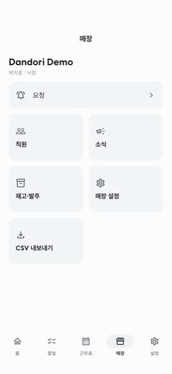
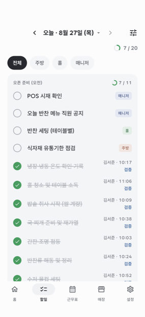
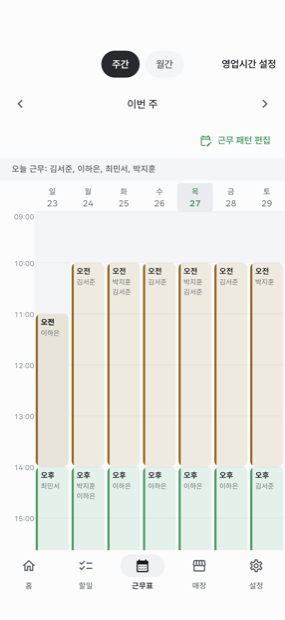
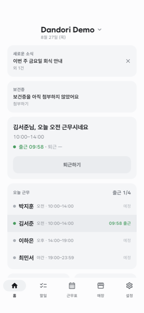
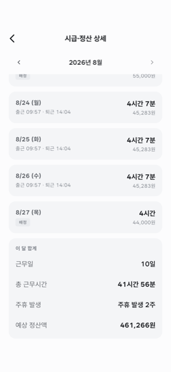
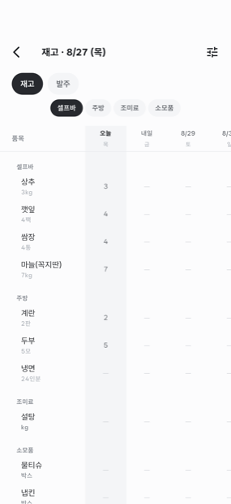
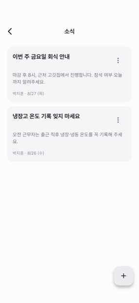

사용설명서
매장 만들기부터 체크리스트·근무표·출퇴근·정산·재고까지, 기능별로 어떻게 쓰는지 정리했습니다.
1시작하기
매장을 만들고 직원을 부르기까지 5분이면 됩니다.
사장님이 처음 할 일
- 앱을 설치하고 구글 또는 애플 계정으로 로그인합니다.
- 매장 만들기를 고르고 매장 이름과 업종을 입력합니다.
- 영업시간을 요일별로 지정합니다. 이 시간을 기준으로 근무표 화면이 그려집니다.
- 시간대(오픈·미들·마감처럼 하루를 나누는 구간)를 정합니다. 업종을 고르면 기본값이 채워지니 이름과 시간만 손보면 됩니다.
직원 초대하기
매장 탭 → 직원에서 초대 코드나 QR을 만듭니다. 직원은 앱을 설치한 뒤 코드를 입력하거나 QR을 찍으면 바로 합류합니다. 매니저로 들어올 사람에게는 매니저용 코드를 따로 발급하세요.

매장이 여러 곳이면 홈 화면 위쪽 매장 이름을 눌러 전환합니다. 직원으로 참여하는 매장은 개수 제한이 없습니다.
2오픈·마감 체크리스트
할 일을 한 번 등록해두면 매일 그날 근무자에게 자동으로 배정됩니다.
할 일 등록
할일 탭 오른쪽 위 설정 아이콘 → 할 일 관리에서 항목을 추가합니다. 항목마다 이렇게 정할 수 있습니다.
- 시간대 — 오픈에 할 일인지 마감에 할 일인지
- 파트 — 주방·홀처럼 담당이 나뉘면 지정 (안 정하면 전원에게 보입니다)
- 요일 — 매일이 아니라 특정 요일만 하는 일이면 지정
- 사진 인증 — 켜면 완료할 때 사진을 반드시 찍어야 합니다
- 더블체크 — 켜면 직원이 완료한 뒤 관리자가 한 번 더 확인합니다

기록 확인
홈의 활동 기록에서 그날 있었던 일을 시간순 장부로 볼 수 있습니다. 완료·취소·출퇴근·재고 기입이 한 줄씩 쌓이고, 분류나 직원으로 걸러서 볼 수 있습니다.
취소된 완료도 기록에 남습니다. 되돌려도 흔적이 사라지지 않으니 안심하고 쓰셔도 됩니다.
3근무표
패턴을 한 번 짜두면 매주 반복됩니다. 바뀌는 날만 손대면 됩니다.
근무 패턴 짜기
근무표 탭 → 근무 패턴 편집에서 요일 × 시간대 격자에 직원을 체크합니다. 여기서 저장한 내용이 매주 되풀이됩니다.
2주씩 번갈아 도는 매장이라면 1주차 / 2주차 탭을 각각 채우면 됩니다.
특정 날짜만 바꾸기
주간 화면에서 날짜 칸을 눌러 그날만 사람을 넣거나 뺄 수 있습니다. 패턴은 그대로 두고 그날만 예외로 처리됩니다.

직원의 근무 변경·휴가 요청
직원이 근무표에서 본인 근무를 눌러 휴무·휴가를 신청하거나 추가 근무를 요청할 수 있습니다. 요청이 오면 매장 탭 맨 위 요청에 뱃지가 뜨고, 승인하면 근무표에 바로 반영됩니다.
4출퇴근
버튼 한 번으로 찍고, 정말 매장에서 찍었는지는 앱이 확인합니다.
찍는 방법
홈 화면 내 근무 카드에서 출근하기 / 퇴근하기를 누릅니다. 확인 창이 한 번 뜨니 실수로 눌러도 괜찮습니다.

현장 확인 설정 (사장님)
매장 설정 → 출퇴근 인증에서 켜고, 확인 방법을 고릅니다.
- Wi-Fi + 위치 (권장) — 매장 Wi-Fi를 먼저 확인하고, 안 되면 위치로 확인합니다
- 위치만 — 지도에 찍은 매장 위치에서 정해진 반경 안인지로만 확인합니다
- Wi-Fi만 — 매장 Wi-Fi 연결로만 확인합니다
고른 방법에 필요한 설정(지도 위치 / Wi-Fi 등록)만 화면에 나타납니다.
막지 않습니다. 대신 사유를 적어야 기록되고, 활동 기록과 근태 화면에 ‘외부’ 표시와 사유가 함께 남습니다. 외근이나 대타처럼 정당한 경우를 막지 않으면서, 사장님은 무슨 일이 있었는지 알 수 있습니다.
시간이 잘못 찍혔다면
직원이 정정 요청을 보내면 매장 탭 → 요청에서 승인할 수 있습니다. 원래 기록은 지워지지 않고, 승인된 정정이 반영된 시간으로 계산됩니다.
5근태·시급 정산
시급만 넣어두면 연장·주휴까지 계산해 드립니다.
시급 넣기
매장 탭 → 직원 → 직원을 고르면 시급·정산 항목이 있습니다. 시급은 사장님과 본인만 볼 수 있습니다.
무엇을 기준으로 계산하나요
- 출근·퇴근이 모두 찍힌 날 — 실제 찍힌 시간으로 계산합니다
- 안 찍었거나 퇴근을 안 찍은 날 — 근무표에 배정된 시간으로 계산합니다
- 아직 오지 않은 날 — 계산에 넣지 않습니다
여기에 주 40시간을 넘는 연장과 주휴 발생 여부까지 자동으로 잡힙니다.

분 단위 반올림
매장 설정 → 정산에서 반올림 단위를 고를 수 있습니다. 10분으로 두면 54분 근무는 50분으로, 55분 근무는 1시간으로 계산됩니다. 기본은 ‘없음’(기록된 그대로)입니다.
내보내기
매장 탭 → CSV 내보내기로 이번 달 직원별 정산표를 받을 수 있습니다. 카톡이나 메일로 바로 보낼 수 있습니다.
6재고·발주
종이 카운트 시트를 그대로 앱으로 옮겼습니다.
준비하기
매장 설정에서 재고 관리를 켜면 할일 탭과 매장 탭에서 들어갈 수 있습니다. 구성은 이렇습니다.
- 리스트 — 일일 재고, 주간 발주처럼 세는 묶음
- 섹션 — 셀프바·주방·조미료처럼 매장 동선 순서로 두면 세기 편합니다
- 품목 — 이름과 단위(kg·팩·박스)를 넣습니다
기입하기
왼쪽에 품목, 위에 날짜가 있는 표입니다. 칸을 눌러 수량을 넣습니다. [재고]와 [발주]를 오가며 쓸 수 있고, 지난 날짜도 채워 넣을 수 있습니다.

한 품목을 나눠 세기
같은 품목이 여러 상태로 나뉘어 있을 때 씁니다. 예를 들어 족발을 삶은 것과 중탕한 것으로 따로 세고 싶다면, 품목 편집에서 나눠서 세기를 켜고 칸 이름을 넣으세요.
기입할 때는 칸마다 따로 넣고, 재고는 합계로 계산됩니다. 5와 5를 넣으면 10으로 잡히니 더하실 필요가 없습니다.
칸은 3~4개까지가 적당합니다. 발주는 나누지 않고 총량으로 넣습니다.
입고 예정
마지막으로 재고를 센 뒤에 넣은 발주는 들어올 예정으로 잡힙니다. 다음에 재고를 세면 자동으로 사라집니다.
7소식·알림
단톡방에 묻히던 공지를 확실하게 전달합니다.
소식 올리기
매장 탭 → 소식에서 글을 씁니다. 올리면 직원들에게 알림이 가고, 직원 홈 맨 위에 카드로 뜹니다. 중요한 글은 위로 고정할 수 있습니다.

알림 설정
설정 탭 → 알림 설정에서 받고 싶은 알림만 켜둘 수 있습니다. 매장마다 따로 설정됩니다.
휴대폰 설정에서 단도리 알림이 꺼져 있을 수 있습니다. 앱의 알림 설정에서 토글을 켜면 안내에 따라 휴대폰 설정으로 이동할 수 있습니다.
8직원·권한
누구에게 무엇까지 맡길지 정할 수 있습니다.
직책
- 사장 — 매장을 만든 사람. 모든 권한을 가집니다
- 매니저 — 매장 설정에서 관리 권한을 켜면 체크리스트·직원·근무표를 관리할 수 있습니다
- 직원 — 본인 근무와 할 일 중심
직급 변경, 멤버 제거, 매장 설정, 구독은 언제나 사장님만 할 수 있습니다.
직원별 세부 권한
직원 상세에서 발주 기입, 재고 실사, 근무표 편집처럼 항목별로 따로 열어줄 수 있습니다.
보건증
직원이 본인 프로필에서 사진과 만료일을 등록합니다. 만료가 다가오면 홈에 알림 카드가 뜨고, 사장님과 매니저는 직원 상세에서 열람할 수 있습니다. 등록과 갱신은 본인만 할 수 있습니다.
9요금제
작게 시작하고, 필요할 때 늘리세요.
- 무료 — 사장님 포함 3명까지, 매장 1곳. 기능은 전부 씁니다
- 프리미엄 — 인원 제한 없이, 매장도 여러 곳. 월 9,900원 또는 연 99,000원
구독은 매장 단위입니다. 직원이 늘어도 요금은 그대로입니다.
매장 수 한도는 내가 직접 만든 매장을 기준으로 봅니다. 직원으로 참여 중인 매장에 프리미엄이 걸려 있어도 내 매장 한도와는 무관합니다.
10자주 묻는 질문
아니요. 구독은 매장 단위라 사장님 한 분만 결제하면 그 매장 구성원 모두가 프리미엄 기능을 씁니다.
‘실근무’는 출근·퇴근이 모두 찍힌 날만 더한 값입니다. 퇴근을 안 찍은 날은 빠지기 때문에 근태 목록과 달라 보일 수 있습니다. 정산액은 그런 날을 배정 시간으로 채워 계산합니다.
됩니다. 다만 위치 권한(정확한 위치)이 허용돼 있어야 아이폰이 Wi-Fi 정보를 알려줍니다. 허용돼 있지 않으면 위치로 확인합니다.
아니요. 발주는 넣은 날짜가 아니라 받을 날짜 기준으로 기록됩니다. 활동 기록에는 실제로 기입한 날에 남고, 대상 날짜가 다르면 함께 표시됩니다.
직원 상세에서 내보내면 됩니다. 그동안의 근무·출퇴근 기록은 그대로 남습니다.
설정 → 계정 관리에서 계정을 삭제할 수 있고, 매장은 매장 설정에서 삭제합니다. 되돌릴 수 없으니 확인 절차를 거칩니다.